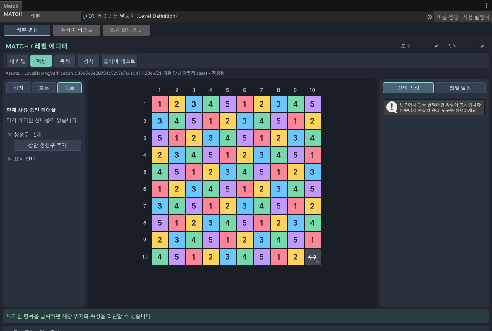

03 · 레벨 요소
장애물과 덮개
장애물을 놓고, 몇 번 맞아야 없어지는지 정합니다.
시작 전에 먼저 기본 블록을 배치해 두면 확인하기 쉽습니다.
종류별로 어디서 고르나요?
| 왼쪽 메뉴 | 종류 | 편집할 내용 |
|---|---|---|
| 장애물 | 나무상자 / 고철 뭉치 / 잠긴 고물 금고 | 내구도 등 해당 물체의 설정 |
| 장애물 | 색깔 자물쇠 | 필요한 색 |
| 장애물 | 대형 폐가전 | 2×2 크기와 내구도 |
| 덮개 | 거미줄 / 우주 곰팡이 | 블록 위에 놓는 층과 내구도 |
| 바닥 | 먼지 | 블록 아래의 먼지와 내구도 |
| 장치 | 고장 난 발전기 | 2×2 크기, 필요한 충전량, 대상 연결 |
내구도는 없어지기까지 얼마나 더 맞아야 하는지를 나타내는 숫자입니다. 종류별로 가능한 범위가 다릅니다. 오른쪽 입력 안내에 맞춰 정하세요.
놓고 설정하기
- 왼쪽에서 종류를 고릅니다.
- 원하는 칸에 놓습니다.
- 선택으로 바꾼 뒤 놓은 물체를 누릅니다.
- 오른쪽 선택 속성에서 내구도나 색을 정합니다.
- 검사를 눌러 겹침이나 잘못된 값을 확인합니다.
2×2 물체 놓기와 옮기기
대형 폐가전과 발전기는 네 칸을 차지합니다. 표시되는 네 칸을 보고 클릭하세요. 한 칸짜리처럼 길게 끌어서 여러 개를 칠하지 않습니다.
- 놓은 물체의 점유 칸을 선택합니다.
- 오른쪽 이동 기능 또는 오른쪽 버튼의 2×2 본체 이동을 사용합니다.
- 새 위치의 네 칸을 확인한 뒤 놓습니다.
네 칸 중 하나를 선택해 본체를 지우면 물체 전체가 지워집니다. 발전기를 지우면 연결선도 없어지지만 연결 대상 장애물까지 지워지지는 않습니다.
블록·덮개·바닥은 따로 다룹니다
한 칸을 보더라도 블록, 그 위의 덮개, 아래의 먼지는 별개입니다. 편집 층을 먼저 확인한 뒤 고치거나 지우세요. 함께 놓을 수 없는 조합은 검사에서 알려줍니다.
이미 놓은 장애물 찾기
- 왼쪽 목록 탭을 누릅니다.
- 현재 사용 중인 장애물에서 종류를 펼칩니다.
- 좌표가 적힌 항목을 누릅니다. 해당 위치와 오른쪽 설정이 함께 표시됩니다.

종류 옆 숫자는 현재 놓인 개수입니다. 2×2 물체 하나는 1개로 셉니다.
변경 이력
2026-10-08 · 추가 · 튜토리얼 메뉴 · 일반 매뉴얼의 공통 목차에 튜토리얼 진입 항목을 추가하여 다른 안내를 읽은 뒤에도 돌아갈 수 있게 했습니다. Windows / Chrome · 메뉴 왕복 이동 확인.
| 변경일 | 변경 항목 | 이전 → 현재 | 이유 |
|---|---|---|---|
| 2026.09.28 | 모양 목록 | 추천 → 등록형 목록 안내 추가 | 사용자 등록 방식 반영 |
| 2026.09.28 | 맵 모양 추천 안내 | 추가 · 왼쪽 목차에 추천 안내 연결 | 추천과 ! 도움말 사용법 안내 |
| 2026.09.28 | 이 페이지 전체 | 추가 · 처음 작성 | 현재 Match 도구를 쉽게 설명 |
설명 편집일: 2026.09.28 · 대상: Windows / Unity 6000.3.10f1
검증 상태: 메뉴·절차 코드 대조, 실제 화면 캡처. 확인 범위 보기